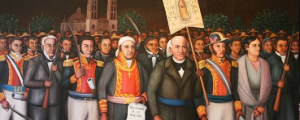

Fechas Importantes
- 13 de septiembre: Batalla de Chapultepec, gesta heroica de 1847 donde los cadetes conocidos como los Niños Héroes defendieron con valor el Castillo de Chapultepec ante el avance del ejército invasor estadounidense.
- 15 de septiembre: Conmemoración del Grito de Dolores, cuando en la noche de 1810 el cura Miguel Hidalgo y Costilla hizo sonar las campanas de la parroquia de Dolores para convocar al pueblo a levantarse en armas contra el dominio español.
- 16 de septiembre: Inicio formal e histórico de la Guerra de Independencia de México en 1810, fecha emblemática en la que el ejército insurgente comenzó la lucha armada por la soberanía y libertad de la nación.
- 27 de septiembre: Consumación de la Independencia de México en 1821 con la entrada triunfal del Ejército Trigarante a la Ciudad de México, liderado por Agustín de Iturbide y Vicente Guerrero tras la firma de los Tratados de Córdoba.
- 28 de septiembre: Proclamación oficial del Acta de Independencia del Imperio Mexicano en 1821 por parte de la Junta Provisional Gubernativa, documento que formalizó la existencia jurídica de México como nación independiente.

¡VIVA MÉXICO!